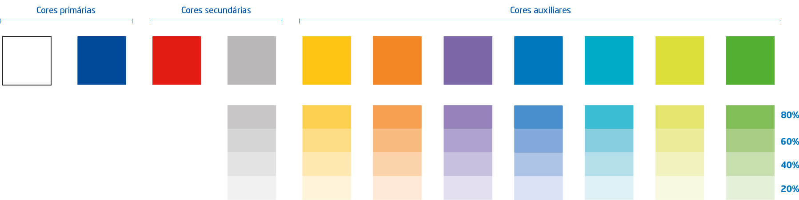
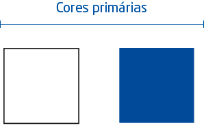
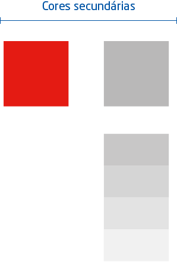
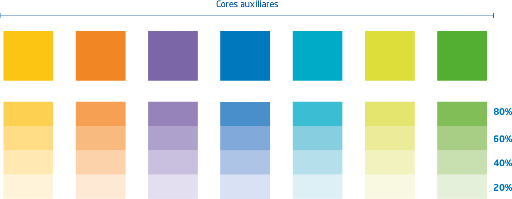
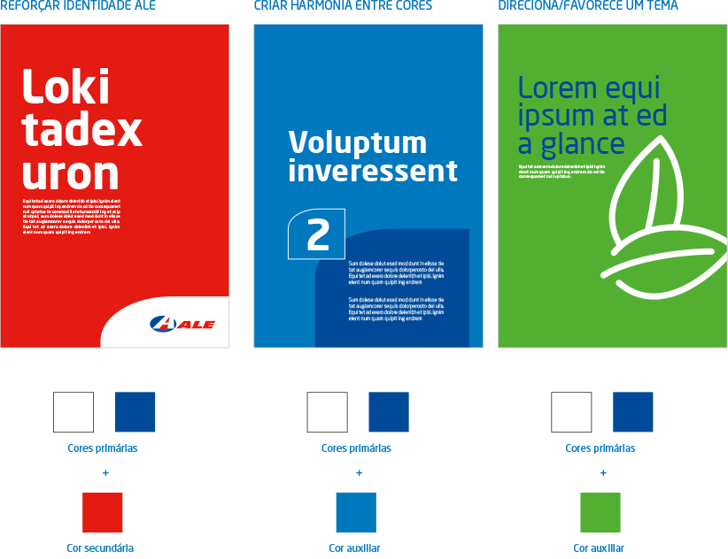
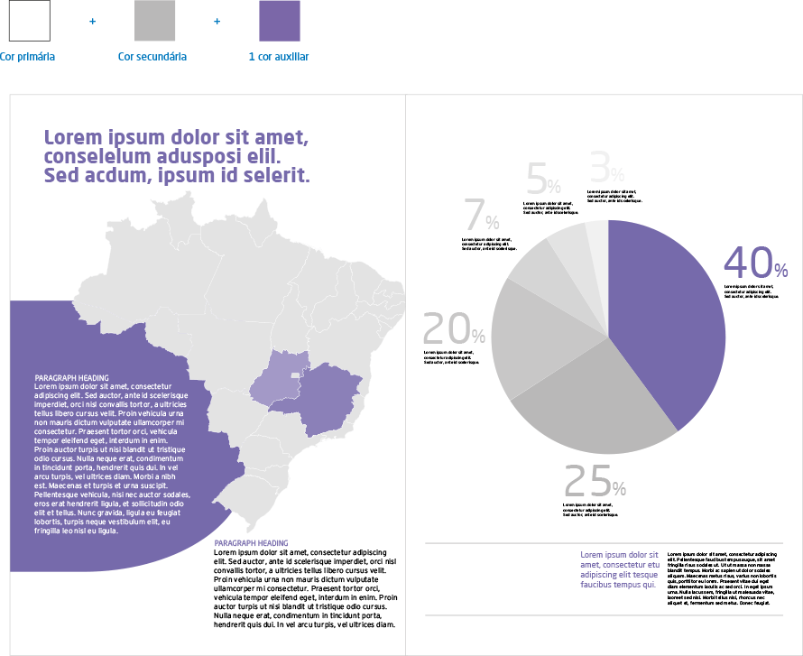
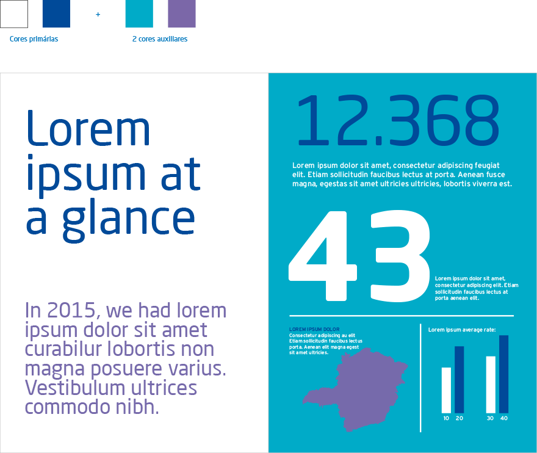
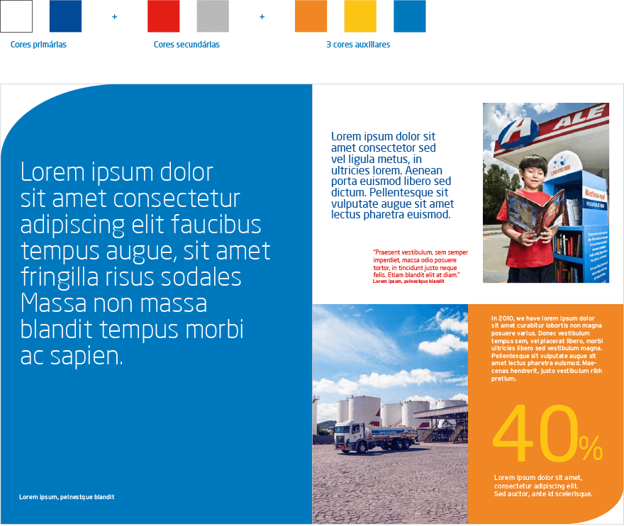

Veja nossa
Paleta de cores
PANTONE
Reflex Blue C
CMYK
100.72.0.6
RGB
0.84.165
HEX
#0054a5
PANTONE
485 C
CMYK
0.100.91.0
RGB
239.46.36
HEX
#ef2e24
PANTONE
Cool Gray 7 C
CMYK
0.0.0.37
RGB
173.175.178
HEX
#adafb2
PANTONE
123 C
CMYK
0.24.92.0
RGB
255.196.38
HEX
#ffc426
PANTONE
1585 C
CMYK
0.56.90.0
RGB
246.137.52
HEX
#f68934
PANTONE
7676 C
CMYK
61.64.3.0
RGB
117.105.171
HEX
#7569ab
PANTONE
285 C
CMYK
89.43.0.0
RGB
0.125.195
HEX
#007dc3
PANTONE
389 C
CMYK
20.0.85.0
RGB
214.224.77
HEX
#d6e04d
PANTONE
389 C
CMYK
20.0.85.0
RGB
214.224.77
HEX
#d6e04d
PANTONE
361 C
CMYK
69.0.100.0
RGB
81.185.72
HEX
#51b948




Como utilizar a
Combinação de cores
Somente primárias:
Quando a aplicação se limita a
uma cor
uma cor
Somente secundárias:
Quando a aplicação se limita de
1 a 3 cores
1 a 3 cores
Primárias + auxiliares:
Para acrescentar contraste e
energia às aplicações
energia às aplicações
Primárias + secundárias + auxiliares:
Para dar nuance e vitalidade
às aplicações
às aplicações
Secudárias + auxiliares:
Cores secundárias e auxiliares isoladas podem
ser utilizadas somente em comunicações internas
(por exemplo, banners internos e cartazes)
ser utilizadas somente em comunicações internas
(por exemplo, banners internos e cartazes)
Somente auxiliares:
Cores auxiliares isoladas podem ser utilizadas
somente em comunicações internas
(por exemplo, banners internos e cartazes)
somente em comunicações internas
(por exemplo, banners internos e cartazes)
Veja alguns exemplos de
Seleção de cores



